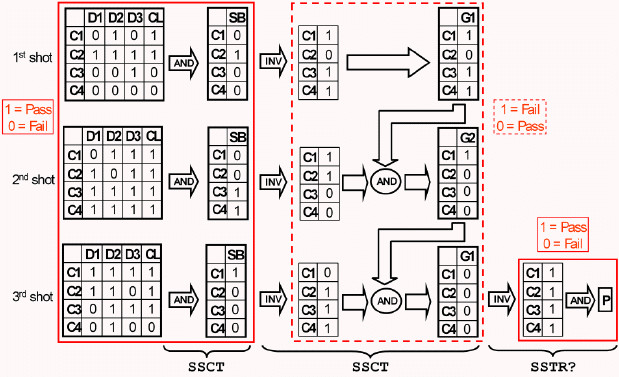

Exploiting hardware resources for performance enhancement
Source synchronous testing is rather time consuming. First, it requires multiple executions of the same functional test. Second, the results of each execution (shot) must be combined with the already existing global results for the previous shots. Finally, if this result accumulation is executed on the workstation, the results must be uploaded after each shot.
However, SmarTest provides a set of firmware commands by which the performance can be considerably enhanced on the Pin Scale cards. With the help of these commands:
- Result data is already accumulated in the hardware.
- The result processing for every shot except the last can be partially performed in parallel with the execution of the next shot.
Note that these firmware commands are not supported on the EXA Scale test systems.
The feature works as follows:
- You define three input channels (which as such do not belong to any synchronization
group) as buffer channels for source synchronous testing. One of these (called source
buffer) serves to hold the cycle or edge results (over all pins) of the last shot. The
other two (called global buffers) alternately contain the global results for all shots
executed so far. This configuration is defined with the SSAC command.
The results of all pins taking part in the source synchronous testing are stored within the error map area of the RDRAM. Accordingly the detailed Error Map for these channels must have been defined in RDRAM with the DRCT firmware command. You must also take care that the selected channels provide enough space for the requested buffer size. Furthermore, the recording mode for the detailed Error Map must have been set to ALL with DCGM.
- After each shot, its combined cycle/edge results are transferred to the source buffer with the SSCT command. This step must occur before the next shot is started.
- Subsequently, the results of the source buffer are combined with those of the global
buffer that currently holds the global results. The result is written to the other global
buffer, which in its turn will provide the global input data for the next accumulation step
(after the next shot). This is also done with the SSCT command.
In contrast to the first step, this second step need not be terminated before the start of the next shot. It can be executed in parallel with the next test execution, and indeed SSCT can be instructed to wait until the next call of FTST? before it starts the accumulation.
- After termination of the last shot, the final result can be uploaded to the workstation with the SSTR? query.
The hardware represents PASS by 1 and FAIL by 0, and it can combine data only conjunctively (by AND). But the results of the current shot must be combined with the current global results disjunctively (by OR), that is, the new global result for a cycle must already be PASS if only one of the two input buffers contains PASS for this cycle. In order to achieve this, SSCT inverts the data of the source buffer before it combines them with the current global results, and also stores the new global results in inverted form, so that in the global buffers, 0 represents PASS and 1 represents FAIL. With this inversion, A AND B in fact equals PASS (= 0) if at least one of A, B equals PASS (= 0).
For the upload of the final results to the workstation, this inversion must be canceled by another inversion which is performed by SSTR?.
The following figure illustrates the principles:

There are three output data pins, D1 through D3, and one output clock pin CL. The pattern comprises 4 cycles (C1 through C4) and is repeated three times. SB is the source buffer, and G1 and G2 are the two global buffers.
It is possible to define different sets of buffers for different synchronization groups and to test these in parallel.
This feature, which is called Rapid Source Sync (RSS), requires no license.
Functional changes
- SmarTest 6.5.3: RSS no longer requires license